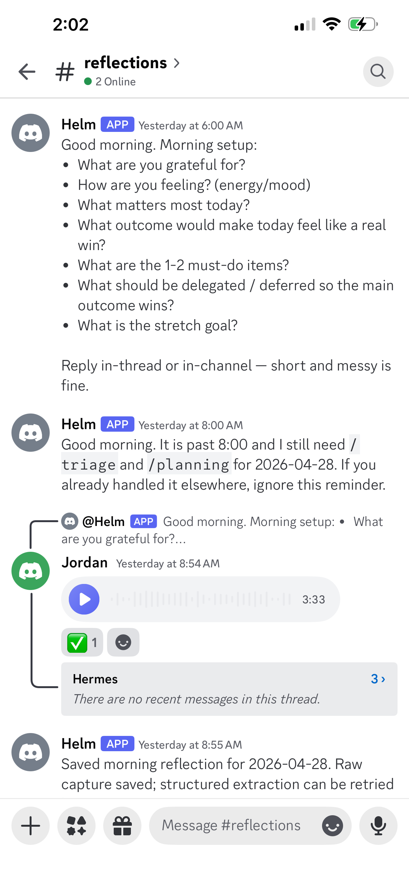
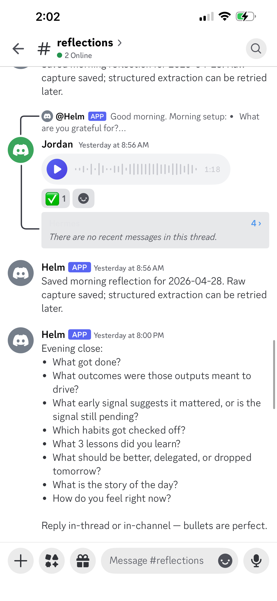
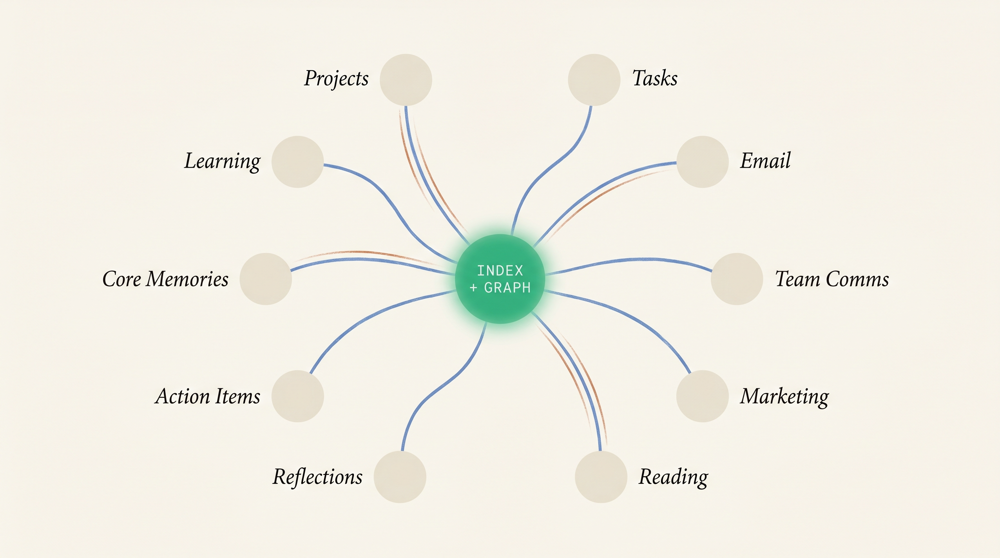

Every human is about to have a personal OS — running on data they own.
I've been building mine. Let me show you what I did this morning.
Each morning Helm prompts me on Discord. I reply by voice, it captures the raw audio plus a structured extraction, and the same flow runs again at evening close — what got done, what early signals say, what I learned.


The reflection isn't a journal — it's an integration point. Helm queries every active domain, fuses the signal, and surfaces what should drive my day.
→ health → relationships → finances
→ learning → personal brand → career / coach
The agent classifies what I share, applies the relevant framework from the open-source Personal OS playbook, and queues the right depth of follow-up. It also recognizes when I'm reflecting on real work — and overlays mental models so I think strategically about whatever's in front of me.
Plus: when I'm reflecting on something I'm actually doing, the agent recognizes it — integrates the learning back into the inventory and surfaces it the next time the same shape of problem comes up.
Top-3 priorities · GTD freshness · habit check · gratitude · evening close
Weekly review · sprint progress · learning sprint · open-loop pruning · finance reconcile
Theme review · learning consolidation · habit audit · budget-to-actual · health protocol check
OKR review · Best Self sprint · strategic re-orient · annual financial planning · health re-baseline
Each vendor wants to own as much as possible. Your agent has to beg for access.
Secure enclaves & biometric-gated stores already exist. The portable, agent-readable layer is what's still missing.
Every input I give it becomes context the agent indexes and graphs.

It catches my jet stream — frees me to focus on creative work.
Most of the SaaS surface area I used to navigate by hand is now driven by Helm on my behalf. When something doesn't exist, the agent provisions the infra itself.
No app-switching. Helm queries, writes, posts, updates — I get a synthesis.
When the gap requires real infra, Helm provisions it on demand.
Obvious objection: not everyone has the technical sophistication to do this safely & cost-effectively. → Solvable. Future agents will run on routines that evaluate, update, and harden the infra under the hood — even the least technical person gets a team of agents managing it.
Everything below shipped while running Sober Sidekick day-to-day. Helm assisted with all of it.
Custody + biosensor explosion + agent = a health coach better than any human can offer. Depth. Persistence. Cross-domain synthesis.
Customers stop opening apps. The interface shifts from human-to-app to agent-to-agent. SaaS doesn't die — its surface area transforms.
Build products that run on data the user owns, not data you store. Architect for the personal hybrid cloud, even before consumers can custody it cleanly.
Frontier models stay premium for hard one-offs. Daily-driver intelligence runs on open weights. The model layer becomes a commodity — not a moat.
Within 12-18 months daily-driver AI runs locally on device. If your wedge depends on a frontier-model API margin, your moat is shrinking faster than you think.
Customers stop opening apps. Design your specialty product to be queryable by their agent, not displayed in your UI. The interface surface inverts.